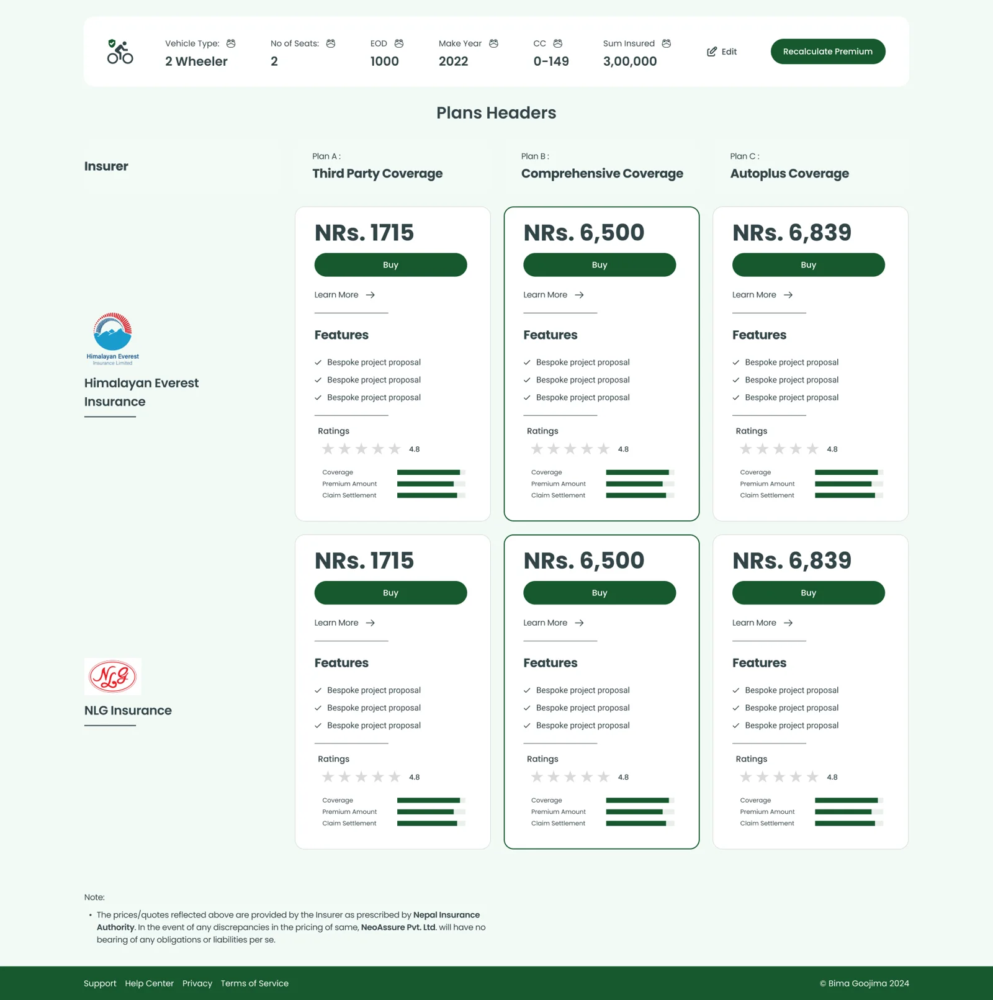
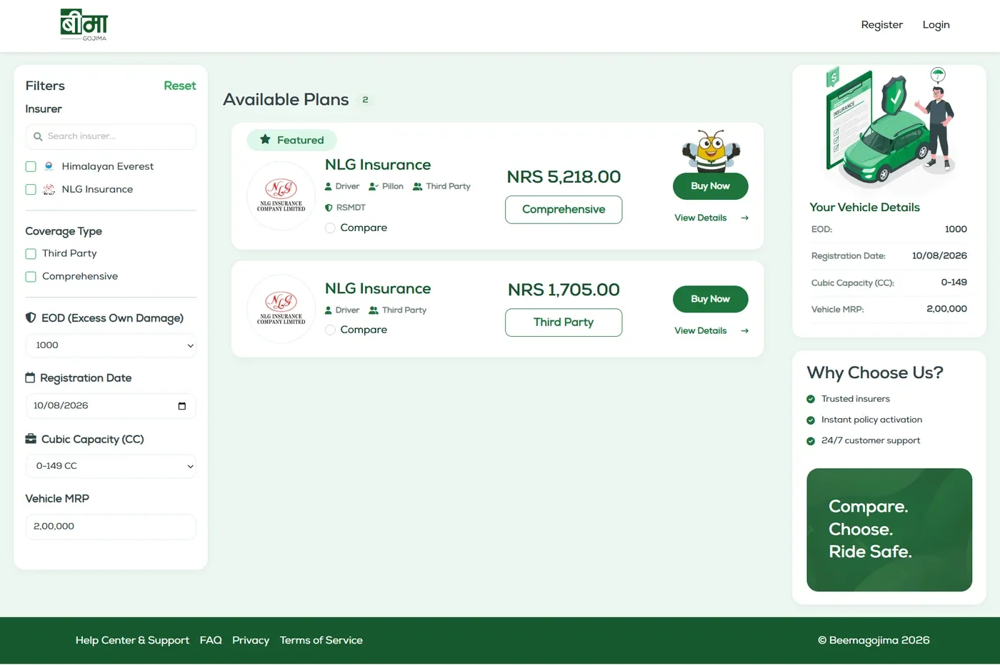
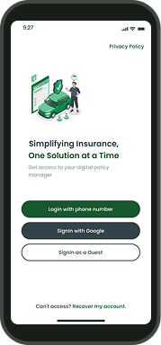

Case study / Product design
Beemagojima
Making insurance simple, inside rules that weren't.
Over about two years, Beemagojima grew from a tool for 20 in-house insurance agents into a digital insurance platform used by more than 2,000 people in Nepal. I owned the UI and worked with project managers, developers and testers on every journey from quote to claim.
TL;DR
The goal
Make insurance easier to explore, purchase and manage online.
- from first release to a stable product
- ~2 yrs
- users, from in-house agents to customers
- 20 → 2,000+
- fields needed to see a price
- 15–20 → 3
- to file a claim
- 3 steps
01 / Pricing
People had to fill in 15–20 fields before seeing a price
Checking a premium meant handing over a long list of details first, before anyone had decided whether they even wanted to buy.
Before 15–20 fields to see a price
After 3 vehicle details
Price first, personal details only when buying
A premium calculator that needs three vehicle details, with no login. We first asked for a phone number at the start, but people were reluctant to give it just to see a price, so it moved to registration, when someone chooses to buy.

02 / Comparison
A "unique" comparison page that people had to learn
Our first draft laid every insurer and plan out as one big grid, with the vehicle details across the top. It looked distinctive, but it was a lot to scan, and people expected the layout they knew from online shopping.
Familiar layout over a unique one
We rebuilt the page around a familiar shopping pattern: filters in a left sidebar, a short list of plans with price and Buy Now, and the vehicle details already entered kept visible on the right. The goal stopped being a unique UI and became a simpler journey.


03 / Insurance terms
Insurer forms were full of terms people didn't understand
Insurers required fields with vehicle and insurance terms, like coverage type, excess and vehicle capacity. They couldn't be removed, but many customers didn't know what they meant.
Small tips right next to the field
We added short tip boxes beside fields with unfamiliar terms, explaining them in plain language without sending people to a help page or out of the form.

04 / Reuse
Renewing or buying another policy meant repeating everything
Existing customers had to enter the same personal and KYC details again to renew, or to insure another vehicle or a life.
One-click renewal and reusable KYC details
Logged-in customers renew with one click, and can pick a saved profile when buying motorcycle, car or life insurance, adding only the details that are new.

More
Want the full story?
The full case study covers the main challenge, five design decisions (and what we changed along the way), the purchase flow, the dashboards and the brand.
Overview
From 20 agents to 2,000+ customers
Beemagojima started as an insurance concept and a brand, became a website and a mobile app, and then grew into a full platform: a premium calculator, policy comparison and purchase, payment, a customer dashboard, claims and an admin side.
The first release was used only by about 20 in-house insurance agents. Today more than 2,000 people use it, and the number is still growing quickly. Getting there took about two years of releasing, testing and changing things.
- from first release to a stable product
- ~2 yrs
- users, from in-house agents to customers
- 20 → 2,000+
- fields needed to see a price
- 15–20 → 3
- to file a claim
- 3 steps
My role
Who did what
The team was project managers, developers, testers and me as the UI/UX designer. I owned the UI across the website, the app and the web platform, and I also built frontend interfaces myself.
- I owned
- The UI: layouts, components, visual design and Figma prototypes across the product
- I supported
- The user journeys, which I mapped together with the project manager
- I collaborated on
- Improving the experience with the project manager and the testing team, release after release
- I built
- Frontend interfaces in HTML, CSS and JavaScript, alongside the developers
- Journeys with PM
- UI in Figma
- Build
- Testing
- Support feedback
The challenge
A simple product, built on complicated rules
The business vision was clear: make buying and managing insurance simple. But every insurer brought its own requirements: long forms, vehicle and insurance terms most people don't know, and legal steps that couldn't be skipped.
Most of that information couldn't be removed. So the design work was less about taking things away and more about deciding when to ask for each thing, how to explain it, and how not to ask twice.
The business vision
- See a price quickly
- Compare plans without effort
- Buy and renew online
- Claim without paperwork
What insurers required
- Many mandatory fields
- Insurance and vehicle terminology
- KYC and legal checks
- Structured claim information
01 / Pricing
Decision 01
Show the price first, ask for details later
Checking a premium used to take 15–20 fields. People had to commit before they even knew whether the price was right.
- Problem
- 15–20 fields of information before anyone could see a premium
- First fix
- A calculator that needs only three vehicle details, with no login
- What we learned
- We still asked for a phone number at the start. Testing and support feedback showed people weren't willing to give it just to see a price
- Change
- The phone number moved to registration, when someone chooses to buy
Ask for information at the moment it's needed, not the moment it's convenient for the system.

02 / Comparison
Decision 02
Familiar beats unique
Early on, our goal was a UI that looked different from everyone else's. With time we realised the goal wasn't to make the product unique. It was to make the journey simpler.
- Before
- A comparison grid: insurers as rows, plan types as columns, with price, features and ratings repeated in every cell and the vehicle details across the top
- Insight
- People already knew how to shop online, and expected filters where e-commerce sites put them
- Change
- We rebuilt the page completely: filters in a left sidebar, a short list of plan cards, and the vehicle details already entered kept visible on the right
- Shown per plan
- Insurer, coverage type and price, with coverage as short tags and View Details next to Buy Now
A familiar pattern is a feature. People shouldn't have to learn a new layout to buy insurance.
03 / Insurance terms
Decision 03
Explain the terms where they appear
Insurer forms are full of vehicle and insurance terms that most customers have never needed to know. We couldn't remove the fields, so we explained them.
- Problem
- Mandatory fields used terms like coverage type, excess and vehicle capacity, and people hesitated or contacted support
- Change
- Small tip boxes beside fields with unfamiliar terms, explaining them in plain language without leaving the form
- Why tips
- They keep the explanation next to the question, instead of a separate help page people would need to find
04 / Reuse
Decision 04
Ask once, reuse everywhere
One source of friction kept coming up in testing: being asked for the same information in different parts of the experience. The fix wasn't to remove required information. It was to stop asking for what the system already had.
- Renewal
- Logged-in customers renew a policy with one click
- Saved profiles
- When buying for someone already added, the KYC step offers their saved profile, with Add New and Search User
- Auto-filled KYC
- Details given before are filled in, so only new information is needed
- More products
- Motorcycle, car and life insurance all reuse the same KYC information
Good UX isn't always about removing steps. Sometimes it's about removing repetition.
Before
- User enters information
- Moves to another part of the flow
- Asked for the same information again
After
- User provides information once
- It's reused wherever it makes sense
- Only new details are asked for

05 / Claims
Decision 05
Turn a claim into three clear steps
Claims involve a lot of information at a stressful moment. Shown all at once, the process felt hard to navigate.
- Change
- A guided flow: choose the claim type, select the policy, then describe the incident with documents
- Why
- Each step asks one kind of question, so people always know what to do next
- After
- A clear confirmation with what happens next


Purchase flow
The full purchase journey
Together, those decisions shape the purchase flow. People can explore and compare freely, and only sign up and hand over personal details once they've chosen to buy. Payment is part of the same journey and works as a real transaction.


Customer dashboard
Managing insurance after buying it
After a purchase, people need one place to understand and manage their insurance. The dashboard brings that together.
- Summary tiles for total premium, purchased policies, pending policies and ongoing claims
- Quick actions: File a Claim, My Claims, My Policies, Expired Policies
- Popular products by vehicle type, as a shortcut to a new quote
- Monthly and total policy charts by insurer
- Recent policy purchases in a table
- A referral form

The admin side
The team running the platform needed its own interface. I worked on an admin experience with user management, kept separate from the customer portal.

Foundation
Before the platform: the brand
Before the platform existed, the product needed an identity. "Gojima" means "in pocket", so the logo uses a rectangle as the pocket, with the first letter of the Nepali word for Beema reversed to sit inside it. The logo and mascot were later redesigned, and the same colours and type run through the website, the mobile app and the web platform.



Design to code
From Figma to production
I worked closely with development and also built frontend interfaces in HTML, CSS and JavaScript. That kept the shipped product close to the design, and it taught me how design decisions behave in a browser.
- Figma
- HTML / CSS / JavaScript
- Responsive product

Outcome
A platform people kept choosing
Beemagojima went from an internal tool for about 20 insurance agents to a customer platform with more than 2,000 users, and it is still growing quickly. It covers discovery, comparison, purchase, payment, policy management and claims.
Reflection
What I took from it
Simple isn't the same as short. We couldn't remove what insurers required. Most of the work was deciding when to ask for each piece of information and how to explain it.
Familiar beats unique. I started out wanting the product to look different. The biggest improvements came from using patterns people already knew.
Ask when it matters. Moving one field, the phone number, changed how willing people were to try the calculator.
Support tickets are research. Testing found a lot, but feedback from real customers showed what static designs and test scripts missed.
Writing the frontend changed how I design. Moving between Figma and code made me more careful about states, spacing and what happens on a small screen.
Selected screens
Scroll to flip through · 06 screens
-
01 / 06 · Website home
-
02 / 06 · Instant quote
-
03 / 06 · Plan comparison
-
04 / 06 · Sign in
-
05 / 06 · KYC details
-
06 / 06 · Policy dashboard